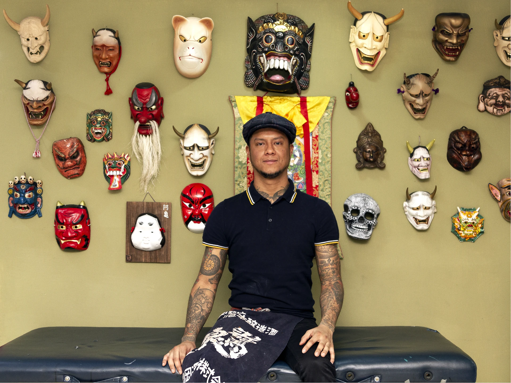

Moroko Gon:

A diferencia de los países occidentales, en Japón se le tiene más respeto a la cultura del tatuaje: “Los japoneses tienen mucha determinación al momento de tatuarse, no lo toman a la ligera. Si alguien te pide un tatuaje es porque ya pensó lo suficiente y ya ahorró su dinero. Y no se trata de menospreciar la manera en que se trabaja en México, sino de recalcar la disciplina de esta profesión en la que llevo más de 17 años.”